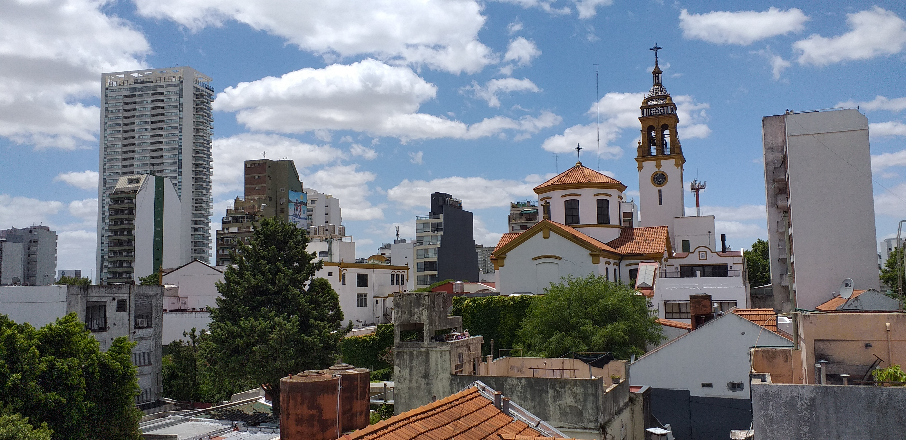
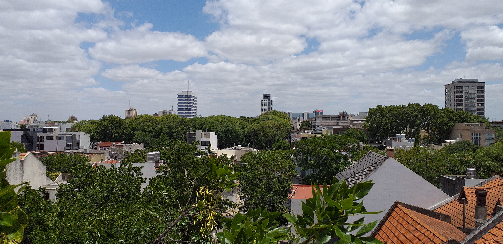

Del lado de Nuñez:
En esta imagen podemos observar la iglesia San Isidro Labrador, historica parroquia del barrio ubicada sobre la avenida homónima la cual cuenta con un amplio boulevard. Y tambien podemos observar la torre residencial Astor sobre la conocidicima Av. Cabildo.

DATOS GEOGRAFICOS
Nuñez:
La zona tiene abundantes edificios de gran tamaño con departamentos y una alta actividad comercial, especialmente en la Avenida Cabildo y la Avenida del Libertador.
Existen dos plazas principales: Plaza Balcarce y Plaza Félix Lima (Con juegos y cancha de básquet). Entre la Avenida del Libertador y la orilla del río, hay grandes áreas al aire libre, donde existen clubes deportivos.
Saavedra:
Con una extensión de 5,9 km², concentra su actividad comercial en sus dos principales arterias: la Avenida Cabildo y Avenida Ricardo Balbín, que lo conectan con los principales corredores de tránsito y transporte público de la ciudad.
Se caracteriza por ser un barrio residencial de casas bajas con numerosos espacios verdes y de esparcimiento, a la vez que por su tranquilidad y estilo de vida tradicionalmente barrial.
Del lado de Saavedra
En esta imagen, a la lejania, se encuentra del lado izquierdo el Parque Saavedra, un atractivo importante del barrio y del lado derecho se encuentra el centro comercial Dot y la autopista Panamericana.
